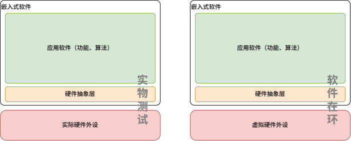
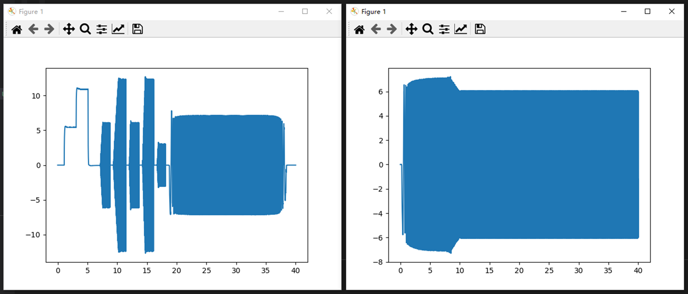
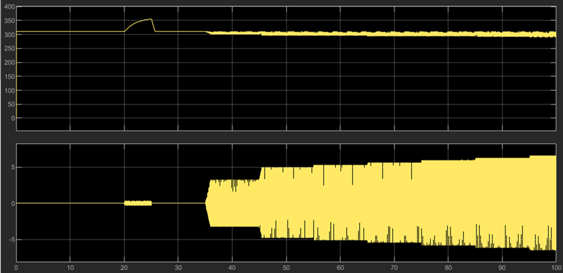

驱动器开发过程中，能否脱离硬件，直接进行软件功能或算法的开发？答案肯定是可行的。将嵌入式软件工程硬件相关接口进行模拟，建立用于仿真的硬件抽象层，就可以实现驱动器软件的仿真。可视化是提高仿真效率的重要手段，python和matlab可以很容易的实现波形显示以及数据分析，下面将介绍两种实现驱动器嵌入式软件SIL仿真的方案。

将嵌入式软件工程使用C编译器（如MinGW/gcc、MSVC等）编译成dll动态链接库，然后使用python调用该dll动态链接库，从而实现SIL仿真。使用python的绘图工具可以方便地绘制出波形。或者生成符合FMI仿真标准的fmu文件，也可以方便地使用python调用进行仿真。下图为使用python进行SIL仿真的波形。

matlab支持将c代码直接编译成mex文件进行仿真，也可以调用编译好的dll动态链接库或者fmu文件进行仿真，具体实现过程这里不再赘述。下图为使用matlab进行SIL仿真的波形。

通过SIL仿真，可以在不连接硬件的情况下，对驱动器嵌入式软件进行测试和验证。这样可以大大提高开发效率，降低开发成本。